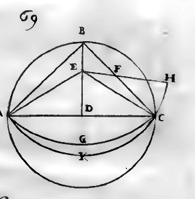

Proposition II: Rectilinear Quadrature of Circular Lunes¶



Proposition II · Theorem II (Tab. 8, Figs. 69–70)
- If from the center of a circle a perpendicular be raised to its diameter, and from that point of it which is also on the circumference lines be drawn to the ends of the same diameter, and in the opposite semicircle an arc be made whose radii are the said lines:
Moreover, any other point being taken, not the center of the circle, on the same perpendicular, let a straight line be drawn from it to one end of the diameter, with which as radius toward the parts of the said opposite semicircle let a circular line be drawn, or be so cut that it has to the semicircumference of the same circle the same ratio as the square of the radius of the supposed circle to that of the straight line which we drew from the assumed point; and likewise from the same point let a line be drawn to the other extremity of the arc made: by these straight lines a certain rectilinear space will be produced, and together with those two arcs another mixed curvilinear space, which will be equal to the former.
Let there be circle ABC, whose diameter is AC and its center D, from which let a line be erected at right angles above AC; then from point B, which ought to lie on the intersection of the circumference, let BA, BC be drawn, and with center B and radius either of BA, BC let arc CGA be described; and any other point E being taken, let EA be joined, at whose radius, with center made at E, let us understand arc AKCH to be described, which has to the semicircumference of the same circle the same ratio as the square on DA to the square on EA, and finally EH being joined, I say that the rectilinear space ABFE is equal to either space, namely to lune GK and to part FCH of the circle. But first it must be shown that the spaces themselves are formed. Let CE be joined; and because we took points B and E on the perpendicular DBE erected from the center to diameter AC, it is manifest that the said arcs AGC, AKCH pass through the two ends C and A of the said diameter; next, because triangle DEA is right-angled at D, and in the first case side DA is greater than side DE, while in the second less than it, the square on EA will have to the square on AD in the first case a lesser ratio, but in the second a greater ratio, than angle BDA to angle DEA, namely than two right angles to
f. 0081 · p. 64angle CEA; nay, than the semicircumference of the circle of radius EA to arc CKA of the same circle; yet as the same square AE is to AD itself, so is the same semicircumference of the circle of radius EA to arc HKA of the same circle; therefore in the first case the same semicircumference will have to arc HKA a lesser ratio, but in the second a greater ratio, than to arc CKA; and thus in the first case arc HKA will be greater, but in the second less than CKA itself, and it is therefore established that in the former point H falls outside, and in the latter inside circle ABC; which being so, line CB will be cut by HFE itself, and thus the proposed spaces will be formed. With this premised, let us now show what was proposed.
Because straight line BA is double in square of DA itself, quadrant BCGA will be double quadrant BDA; yet semicircle CBA is also double the same quadrant BDA; therefore quadrant BCGA is equal to semicircle CBA; yet because square DA to square AE, namely semicircle CBA to the semicircle of radius AE, has the same ratio as arc HKA to the semicircumference of the circle of the same arc, namely as sector EHKA to the semicircle of the same sector, semicircle CBA, namely quadrant BCGA, will be equal to sector EHKA; and if the common space be taken away, FBAE itself, which is rectilinear, will remain equal to both lune GK and space FHC, Q.E.D.